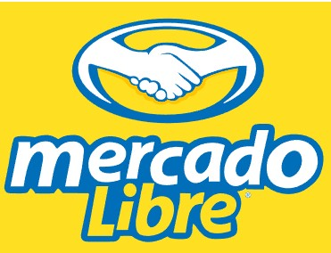

Ropa Tradicional - Mercado Libre

Explora nuestras colecciones de ropa y accesorios para Xantolo, que incluyen vestidos, camisas y atuendos para las festividades del Día de Muertos.
Explora nuestras colecciones de ropa y accesorios para Xantolo, que incluyen vestidos, camisas y atuendos para las festividades del Día de Muertos.